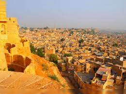

Jaisalmer City Jaisalmer Fort Nathmal's Haveli Patwa Haveli Fort Palace Bada Bagh Desert Festival Thar Desert Sand Dunes Gadisar Lake Nickname(s): The Golden City,[1] Swarna Nagari[2] Jaisalmer is located in RajasthanJaisalmerJaisalmer Location in Rajasthan, India Show map of Rajasthan Show map of India Show map of Asia Show all Coordinates: 26.913°N 70.915°E Country India State Rajasthan District Jaisalmer Established 1156; 868 years ago Founded by Rawal Jaisal Named for Rawal Jaisal Government • Member of Parliament Kailash Choudhary, (BJP) • Member of Legislative Assembly Chhotu Singh Bhati, (BJP) • District collector and district magistrate Ashish Gupta, IAS[3] • Superintendent of Police Vikas Sangwan, IPS[4] Area[5] • Urban 62.38 km2 (24.09 sq mi) Elevation 225 m (738 ft) Population (2011) • City 65,471 Languages • Official Hindi[6] • Additional official English[6] • Regional Marwari, Rajasthani Time zone UTC+5:30 (IST) PIN 345 001 Telephone code 02992 ISO 3166 code RJ-IN Vehicle registration RJ-15 Website jaisalmer.rajasthan.gov.in Jaisalmer (pronunciation)ⓘ, nicknamed "The Golden city", is a city in the Indian state of Rajasthan, located 575 kilometres (357 mi) west of the state capital Jaipur. It is the administrative headquarters of Jaisalmer District. Before Indian independence, the town served as the capital of the Jaisalmer State, ruled by the Bhati Rajputs.[7] Jaisalmer stands on a ridge of yellowish sandstone and is crowned by the ancient Jaisalmer Fort. This fort contains a royal palace and several ornate Jain temples. Many of the houses and temples of both the fort and of the town below are built of finely sculptured sandstone. The town lies in the heart of the Thar Desert (the Great Indian Desert) and has a population, including the residents of the fort, of about 78,000. Etymology Jaisalmer was founded by Jaisal Singh, popularly known as Rawal Jaisal,[8] in 1156 AD.[9] It is named after its founder, with "Jaisal" representing the king's name and "Mer" signifying a fort. So, it means "The Fort of Jaisal", emphasising the city's historic fortification and its royal heritage. The term "Mer" or "Meru" is of Sanskrit origin, signifying a mountain or a high, prominent place, and it has been historically used in the names of various geographical features and landmarks.[citation needed] History Main article: History of Jaisalmer Medieval history The Bhati kingdom, marked as Multan in 800 CE The state of Jaisalmer had its foundations in what remains of the Empire ruled by the Bhati dynasty. Early Bhati rulers ruled over large empire stretching from Ghazni[10] in modern-day Afghanistan to Sialkot, Lahore and Rawalpindi in modern-day Pakistan[11] to Bhatinda, Muktsar and Hanumangarh in modern-day India.[12] The empire crumbled over time because of continuous invasions from the central Asia. According to Satish Chandra, the Hindu Shahis of Afghanistan made an alliance with the Bhati rulers of Multhan, because they wanted to end the slave raids made by the Turkic ruler of Ghazni, however the alliance was defeated by Alp Tigin in 977 CE.[13] Bhati dominions continued to be shifted towards the South as they ruled Multan, then finally got pushed into Cholistan and Jaisalmer where Rawal Devaraja built Dera Rawal / Derawar.[14] Jaisalmer was the new capital founded in 1156 by Rawal Jaisal and the state took its name from the capital. Jaisalmer Fort, built in 1156 AD by the Rajput Rawal (ruler) Jaisal. Modern history On 11 December 1818 Jaisalmer became a British protectorate in the Rajputana Agency.[15][14] Traditionally, in the Middle Ages, the main source of income for the kingdom was levies on caravans, but the economy was heavily affected when Bombay emerged as a major port and sea trade replaced the traditional land routes. Ranjit Singh and Bairi Sal Singh attempted to turn around the economic decline but the dramatic reduction in trade impoverished the kingdom. A severe drought and the resulting famine from 1895 to 1900, during the reign of Salivahan Singh, only made matters worse by causing widespread loss of the livestock that the increasingly agriculturally based kingdom relied upon. The attempts of Jawahir Singh (1914–1949) at modernisation were also not entirely successful in turning the kingdom's economy around, and the drylands of Jaisalmer remained backward compared with other regions of Rajputana, especially the neighbouring state of Jodhpur. Nonetheless, the extensive water storage and supply, sanitation, and health infrastructures developed in the 1930s by the prime minister Brijmohan Nath Zutshi provided significant relief during the severe droughts of 1941 and 1951. During 1930–1947, Jawahir Singh and his ministers also promoted technical education and the academic disciplines of civil and mechanical engineering in the state. After the departure of the British from India in 1947, Jawahir Singh signed an Instrument of Accession to the new Union of India, while retaining some internal autonomy until the 1950s. Jailsalmer State (orange) within Rajputana (yellow), 1909.